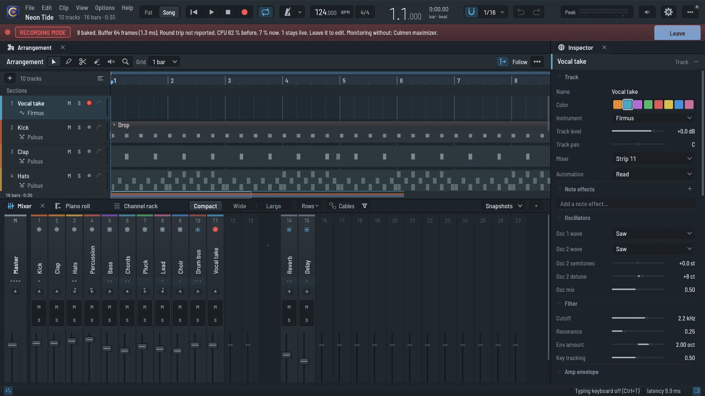
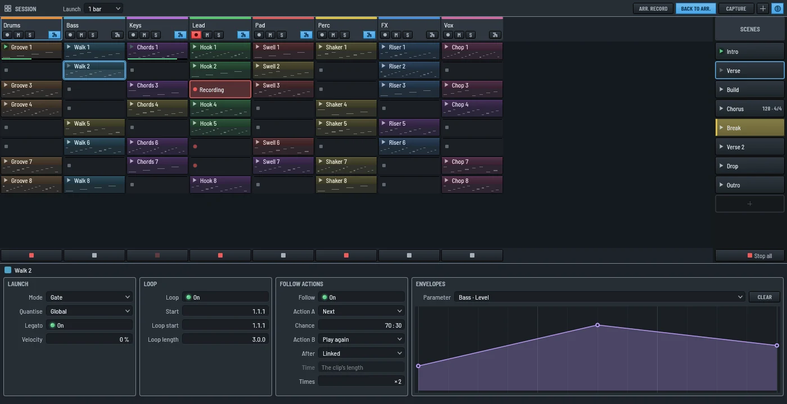
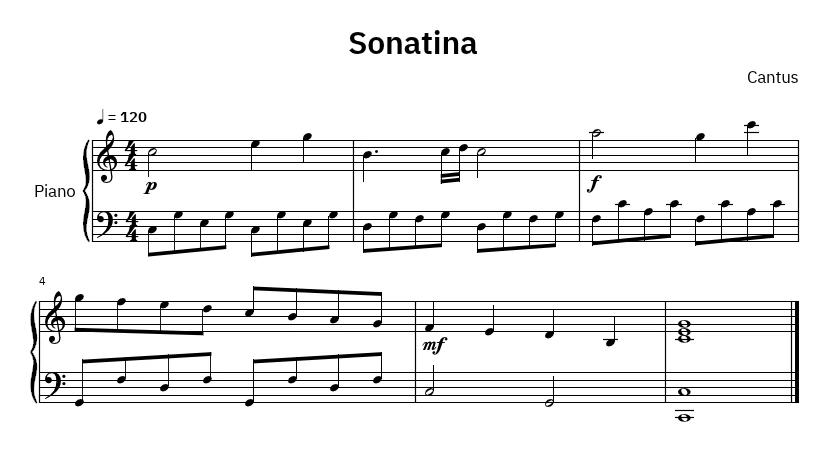

RecordThe recording mode: the song baked, only your take live.
 Mix & master
Mix & masterSends, groups, VCAs, snapshots and a master chain.

PerformSession view, Ableton Link, MIDI clock and MPE.

WritePiano roll, channel rack and a score from the roll.
Cantus runs on Windows, Linux and macOS (preview).
 Cantus
Cantus